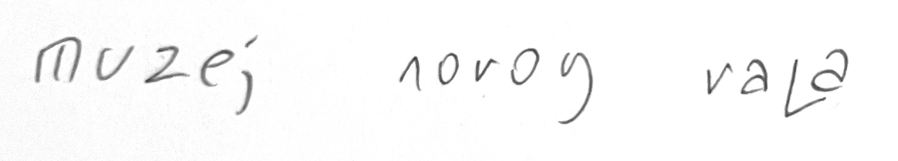
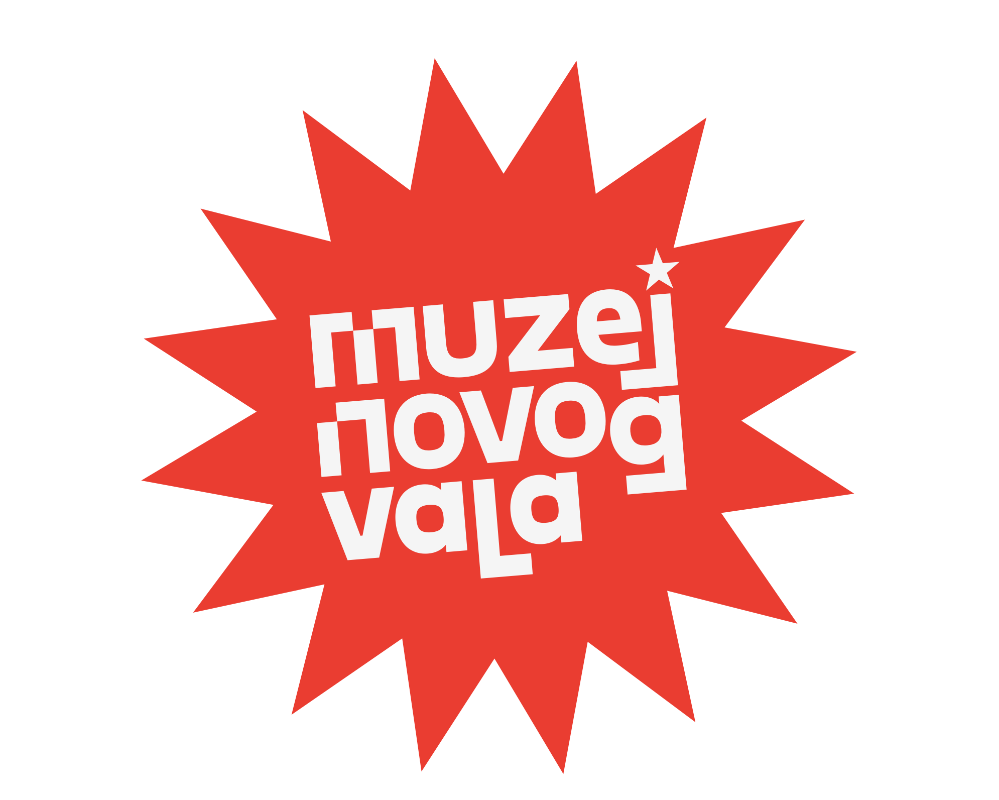
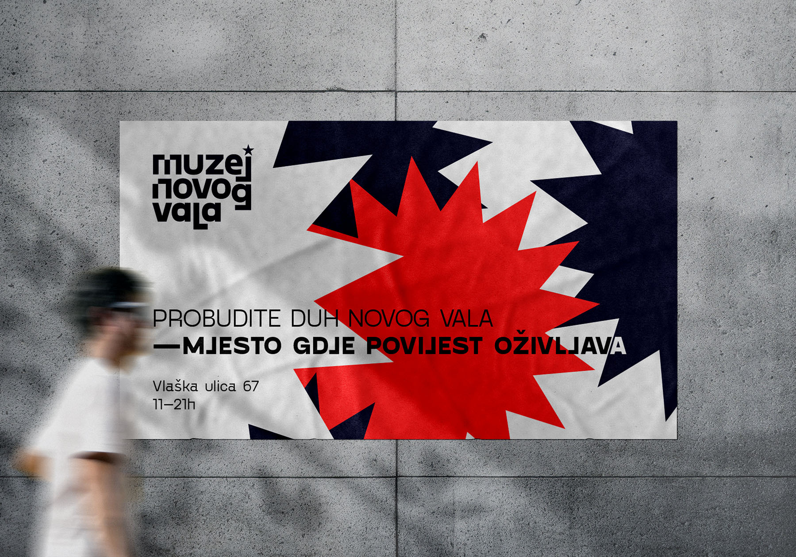
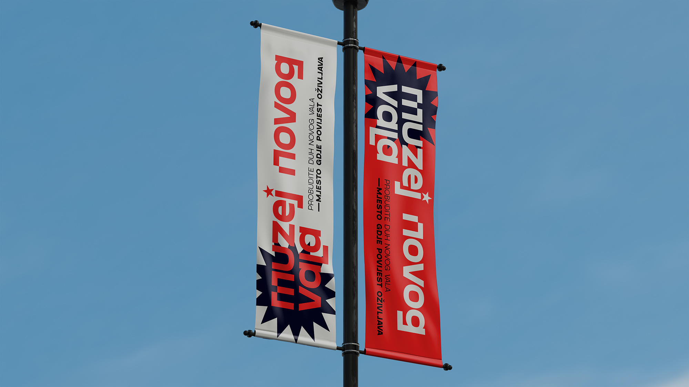
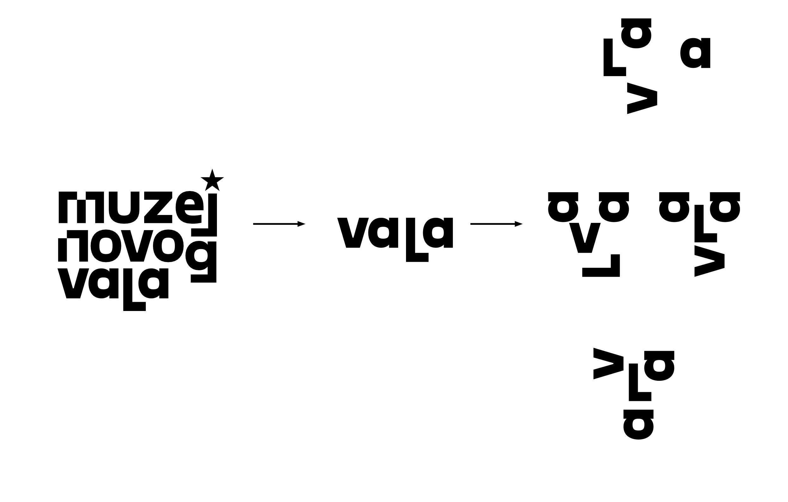
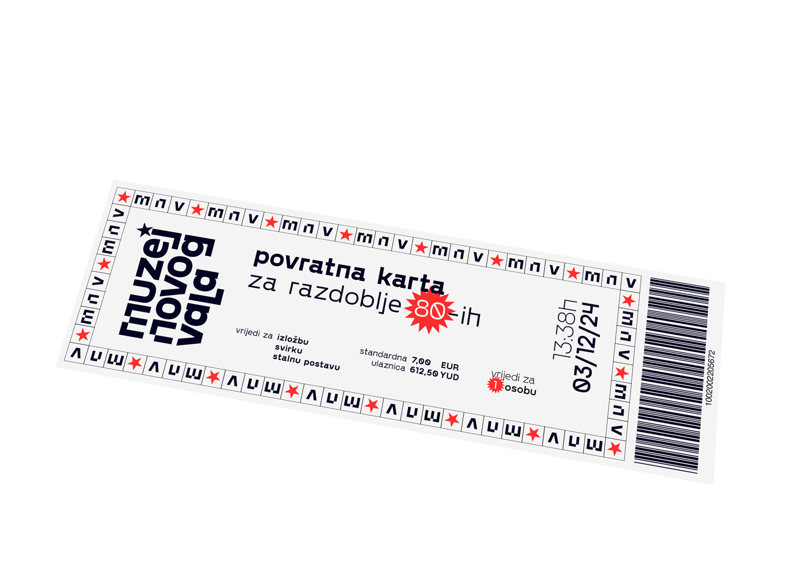
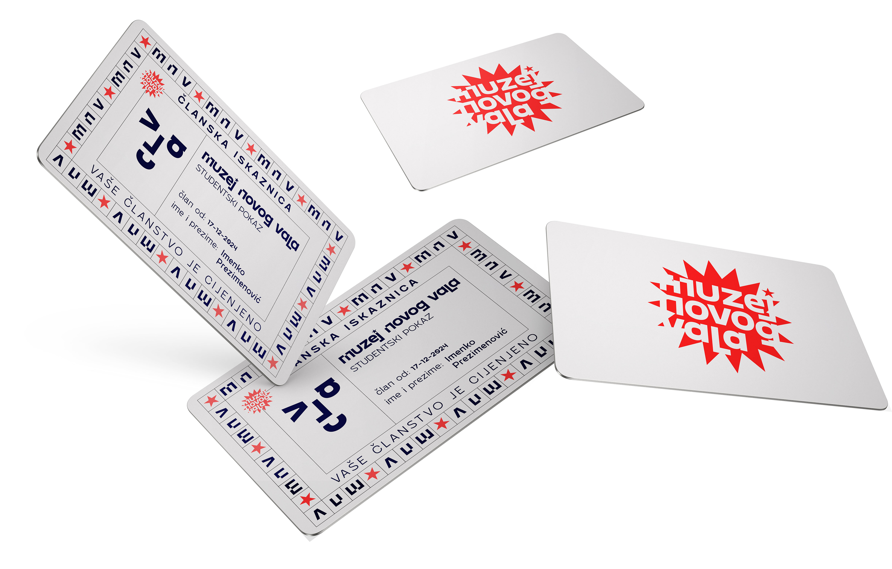
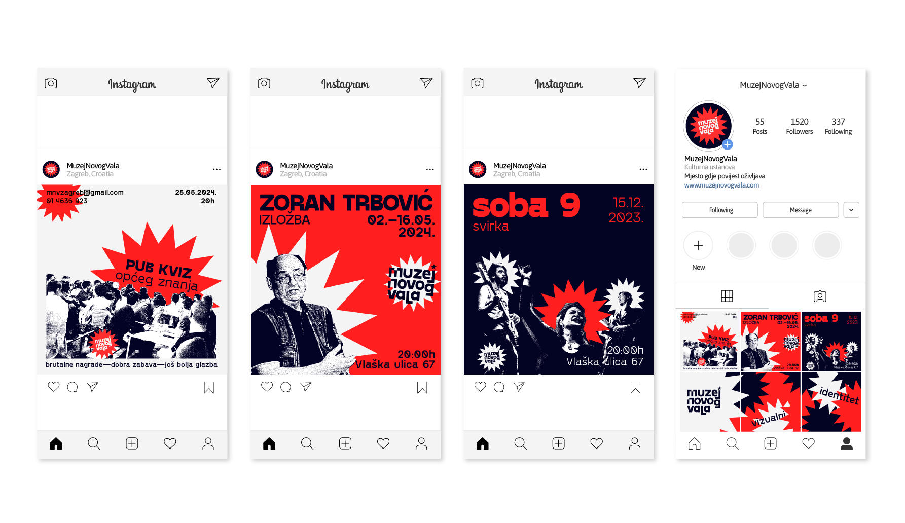
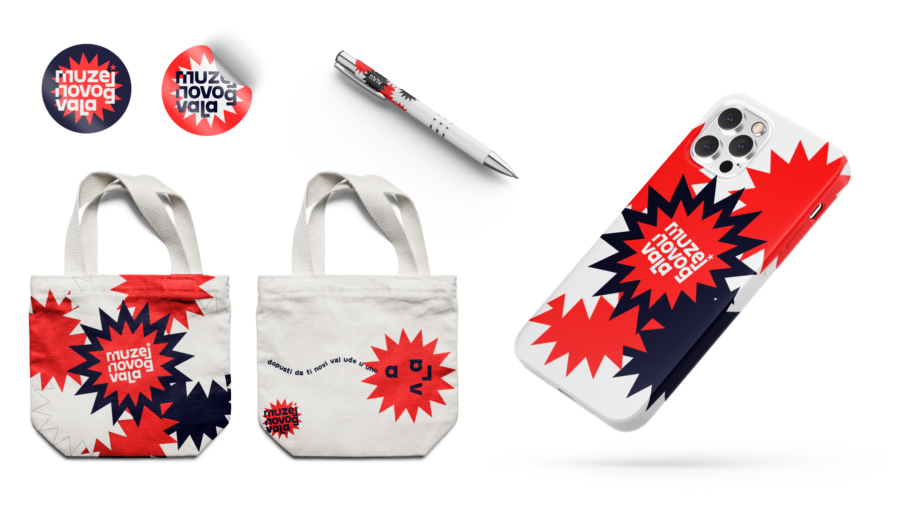

Vizualni identitet Muzeja novog vala se temelji na povijesno –lokalnim događanjima, specifično inspiracija je porez na šund, koji je bio primijenjen na svu glazbu koja spada pod žanr novog vala. Fizička primjena tog šunda nije postojala na omotu nego se osjetila na cijeni albuma te je cilj napokon vizualizirati ga i prisvojiti. Odabrano pismo posjeduje ćirilićne forme, a intervencije na slovima „m” i „n” je omaž koji se referira omot albuma „Odbrana i poslednji dani”.





Ulaznica za muzej se vizualno temelji na kartama zagrebačkog javnog prijevoza iz perioda 70ih i 80ih, kada je novi val bio najprisutniji. Ulaznica muzeja služi kao karta s kojom se vraća u vrijeme. Riječi „povratna karta" asocira da karta vrijedi za više događaja osim stalnog postava.


